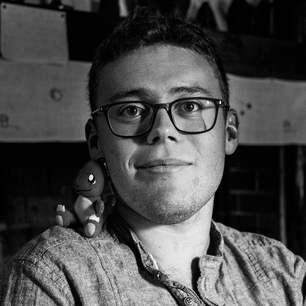

Avec pour but à la fois de vous proposer une prestation de qualité, d'améliorer mes compétences de concepteur de site web et de remplir mon portfolio pour le moment cruellement vide, je vous propose mes services gratuitement. Ayez cependant en tête que je ne suis pas professionnel actuellement, et ne pourrais vous assurez un travail exempt de défauts.
Après un DUT en Informatique obtenu en 2014 et ne sachant pas réellement vers quelle branche continuer mes études tant les domaines de compétence enseignés à l'IUT de Lannion sont vastes, je décide de me lancer dans l'aventure du Bagad De Lann Bihoué. Une opportunité unique de vivre de la musique bretonne au sein de la Marine Nationale comme musicien de la flotte. Cette expérience riche en rencontres m'a fait voyager aux quatre coins du globe sur des centaines de scènes durant 3 ans.
J'ai pu y élargir mon horizon professionnel et approfondir des domaines de compétence diverses comme la gestion d'équipe, du stress et des relations conflictuelles, la vie et le travail en groupe de 30 personnes, l'adaptabilité aux contraintes de la hiérarchie et des situations diverses ainsi que le relationnel avec le publique et la prise de parole devant une (très) large assemblée.
Fort de cette expérience unique, j'ai pu prendre le recul nécessaire à la construction de mon parcours prfesionnel. J'ai donc désormais en vue de reprendre mes études à travers une Licence Professionnelle en alternance en Web Design. Je suis donc à la recherche d'une entreprise dans le but de renforcer mes connaissances en Développement Web, et apprendre tout ce qu'il sera possible de m'enseigner en culture graphique et en design. Je recherche également la formation qui me permettra de devenir Web Designer.